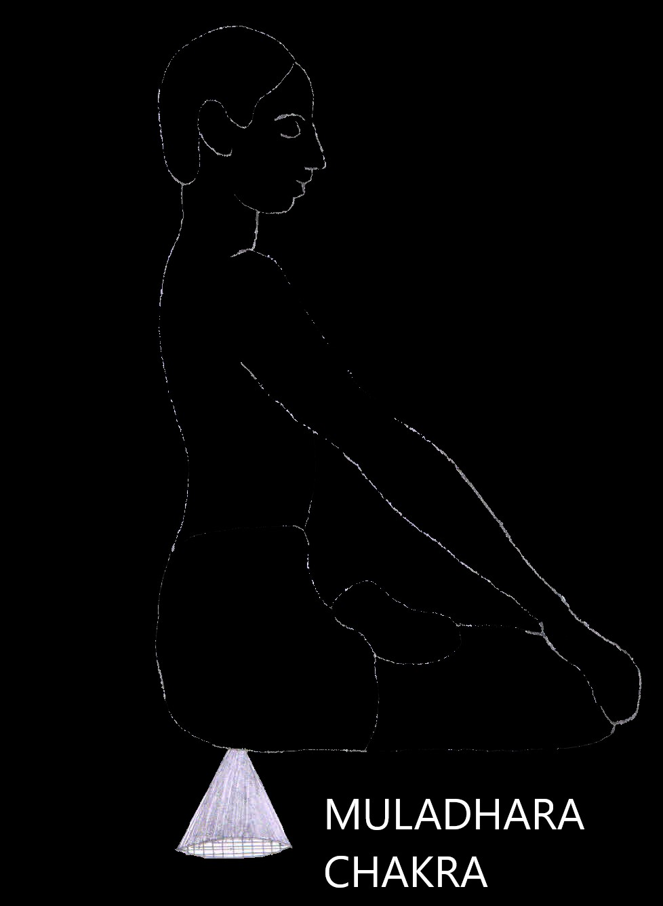
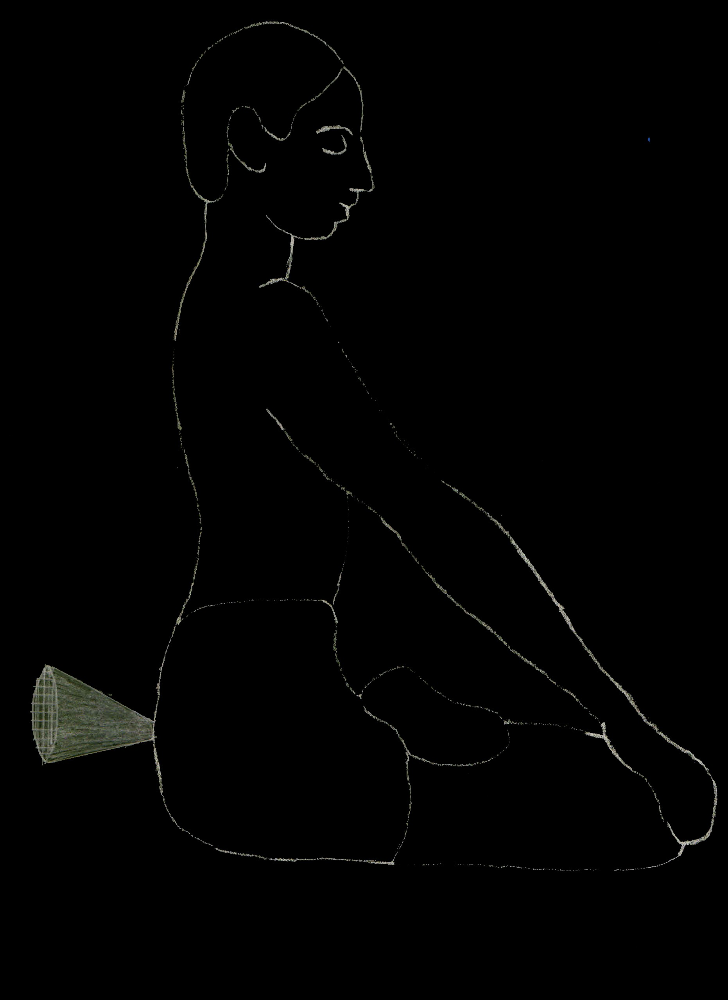
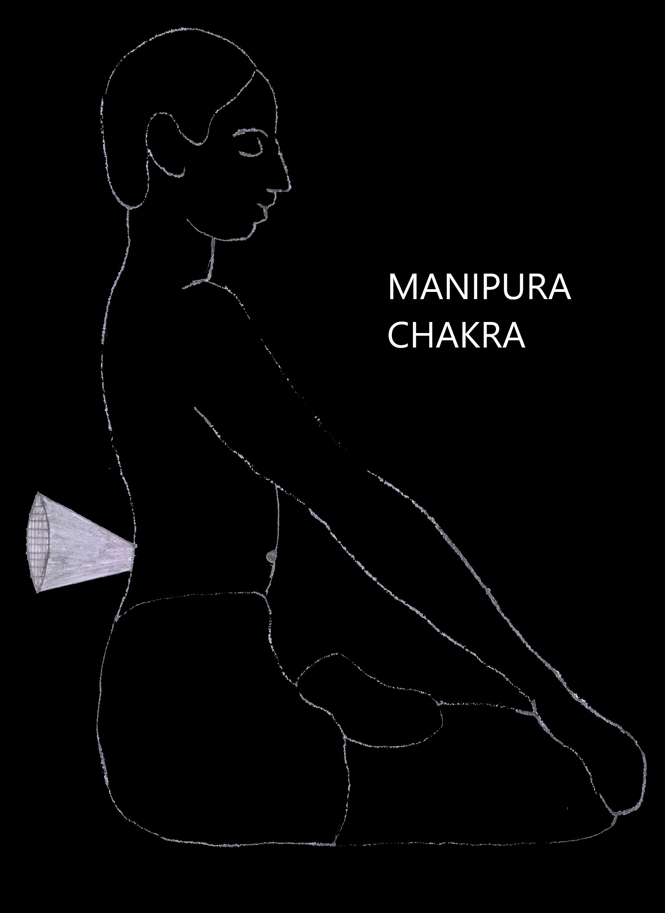
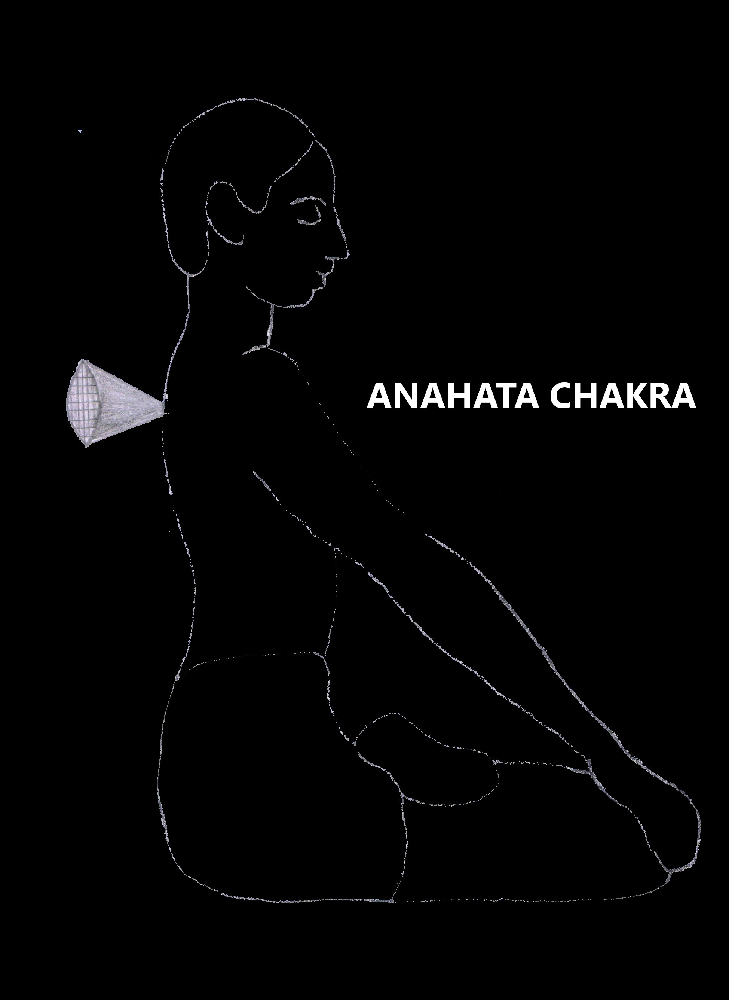
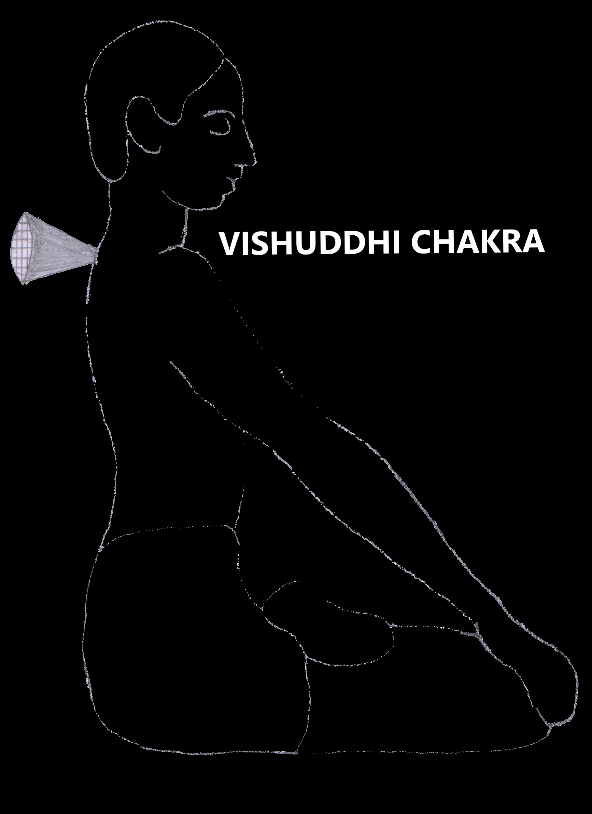
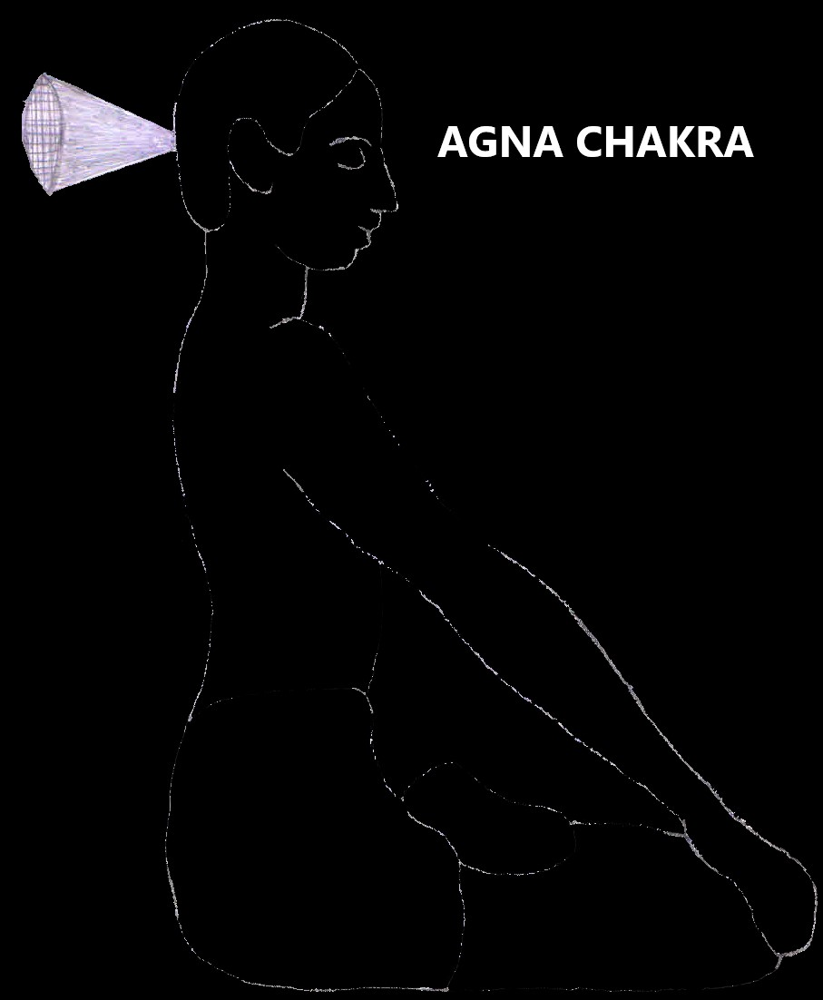
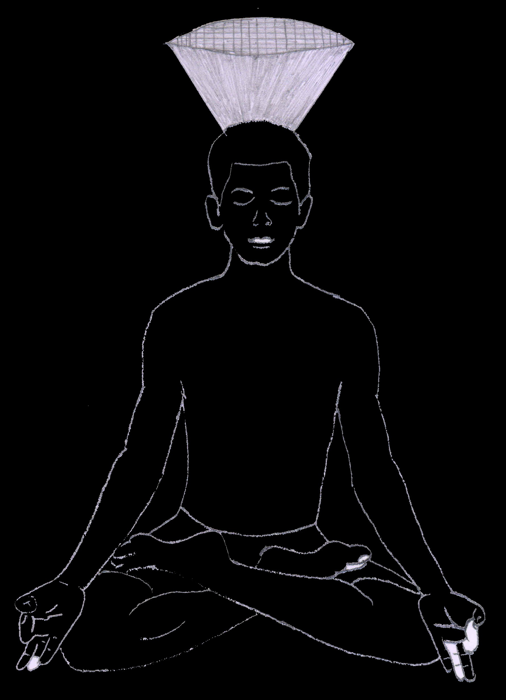

Level 1
Yama Niyama
Babaji has ordained one Niyama for the Kriya Guru and four Yamas for the Shishya.
- Guru has to ensure Babaji is present in astral form during deeksha
- Shishya must give up smoking
- Shishya must give up alcohol
- Shishya must give up non-vegetarian food
- Shishya must not keep extra marital relationships
Note: Shishya is required to take an oath and accept responsibility for any Karma
generated from smoking, drinking alcohol, eating non-vegetarian food and keeping
extra marital relationships.
Level 2
Pranayama
This is a special technique of throat breathing where we have to move only abdomen
for breathing.
Level 3
Chakra Cleansing
Chakras are the major energy centres of the body through which the concerned organs,
cells and tissues get energy. There are 114 chakras in our body. Out of these,
seven chakras are most important and are situated in the vertebral column.
- Muladhara chakra (Base)
- Swadhishthana chakra (Sex)
- Manipura chakra (Solar Plexus)
- Anahata chakra (Heart)
- Vishudhi chakra (Throat)
- Ajna chakra
- Sahasrara chakra
Each of these chakras is in the form of a wheel connected to a funnel. The narrow
opening of the funnel is connected to the center of the chakra. The wide opening of
the funnel faces away from the chakra. Both the openings have sieves.
1. Muladhara chakra (Base chakra)
Muladhara is located between the anus and urethra in the perineum. The wide
opening of the funnel faces downwards towards earth pulling energy from the earth
in sitting posture. Narrow opening faces towards body.

2. Swadhishthana chakra (Sex chakra)
It is located behind the urethra in the spine. The wide opening of the funnel
faces backwards and outwards. Narrow opening faces towards spine.

3. Manipura chakra (Solar)
It is located at the level of umbilicus along the spine. The wide opening of the
funnel faces backwards and outwards. Narrow opening faces towards spine.

4. Anahata chakra (Heart chakra)
It can be located by passing the finger down from the top of sternum or sternal
notch. A projection is felt which is known as sternal ankle. Anahata chakra is
situated just behind the sternal ankle in the spine. The wide opening of the
funnel faces backwards and outwards. Narrow opening faces towards spine.

5. Vishudhi chakra (Throat chakra)
It is located at the sternal notch level in the spine. The wide opening of the
funnel faces backwards and outwards. Narrow opening faces towards spine.

6. Ajna chakra
It is located at the back of scalp or head at the same level as the eyebrow
center. The wide opening faces outwards and backwards. During meditation Atma
concentration is done in between eyebrows.

7. Sahasrara chakra
It is located over the top (crown) of head or scalp. The wide opening of the
funnel is facing upwards to receive the cosmic energy. During deep meditation, you
can feel the thousand petals opening from center to periphery upwards and
receiving cosmic energy.

In Kriyayoga, we have to clean all the chakras with pranayama or prana and get
energised before doing meditation.
Level 4
Nadi Cleansing
The human body has 72000 nadis. Out of these, three are very important. They are
Eda, Pingala and Sushumna.
Eda is the left side channel seen along the spine which connects the right side of
brain as it crosses. It is also called as Chandra nadi. If eda is more activated,
introverted nature and cold sensation in the body is seen.
Pingala nadi is situated over the right side of the spine and this is also called as
Surya nadi. It connects the left side of the brain as it crosses. It is associated
with extroversion and strength or vitality of the body. By the activation of pingala
nadi your body will become hot. If you are not able to tolerate heat, either your
eda nadi is blocked and must be cleared or you have to dip in river or flowing water
several times or pour water on your crown or top of head. If heat still persists, do
water dhara in Shiva temple.
Sushumna nadi is seen at the centre of the vertebral column. They all start from the
muladhara. Eda and Pingala nadi end at the Ajna. Sushumna nadi ends at the
Sahasrara. These three nadis must be cleaned regularly for the free flow of energy
to all the chakras as well as to whole body.
Level 5
Aathmaa Meditation
Once the chakras and nadis are cleaned then you have to close the eyes or with open
eyes pointing towards brumadhya (between eyebrows) and be in a state of atma
consciousness for 15 to 30 minutes. Whenever you sit for meditation, you must do
atma meditation as this is the base from which you can move to further stage of
meditation. If you are basically an irritated and reactive person, you can
concentrate on your heart initially and meditate.
Level 6
Kundalini Kriya
At this stage, guru will help raise the kundalini in a guided meditation session. If
the kundalini is raised two or three times and brought back to normal position, you
have nothing to worry and can do it later all by yourself. If you do it alone and
your mind is not strong enough to command the kundalini power or you get frightened
by kundalini power, you may go to a state of madness. By sitting with the raised
kundalini power, you can be in a state of ecstasy for any time needed state of joy
for any amount of time. Once the meditation is over, yogis continue keeping kundalini
in sahasrara whereas family people have to bring kundalini back to normal position
before getting up from meditation. Otherwise, family people cannot mingle freely in
society.
Level 7
Transcendental Meditation
Once you appreciate the atma and be in a state of Atma consciousness, the guru can
guide you to bring out the astral body for Transcendental meditation. By guided
meditation, the guru will take you to a long journey to the cosmos travelling
through different planets or through a tunnel, etc. Everyone will have different
experiences.
Level 8
Paramaathma Realisation
This travel continues till the astral body feels or experience the paramathma or
parabrahma or supreme soul and the empty, calm and formless space full of energy.
Then guru will guide you to return and finally enter into the physical body.
Initially, it takes long time to go and reach back. Later, in a fraction of a second
you can reach anywhere in the universe.
Level 9
Aathmaa – Paramathma Meditation
Next step is to leave body consciousness and connect with paramathma for longer
periods of time. You will experience a state of ecstasy or drunkenness.
Level 10
Samaadhi Meditation
Prolong Aathmaa and Paramaathma union during astral travel to culminate in Samaadhi.
Note: Yogi can leave the body at will when it is time to take Mahasamadhi.